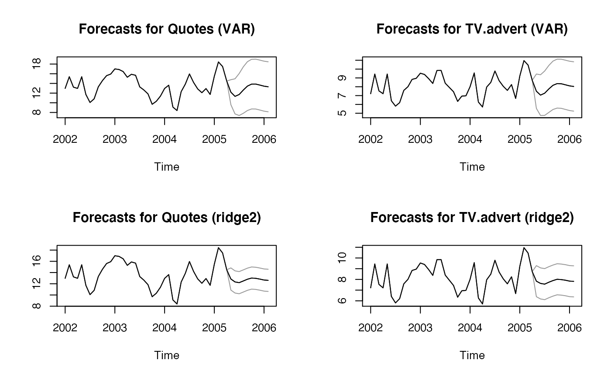
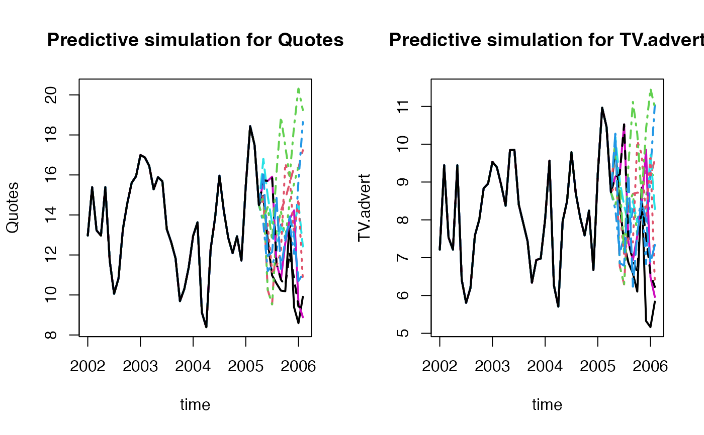
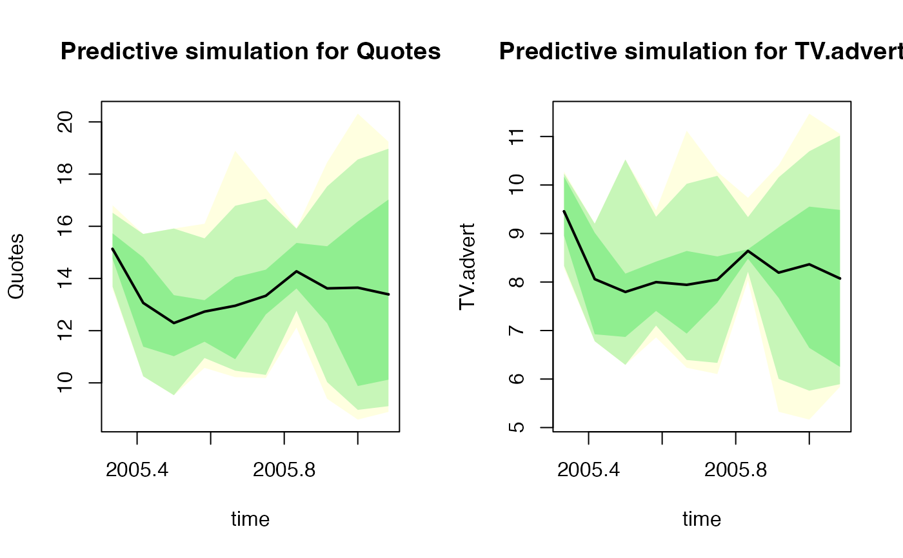

plot.mtsforecast.RdPlot multivariate time series forecast or residuals
result from basicf, ridge2f or varf (multivariate time series forecast)
name of the time series selected for plotting
"pi": basic prediction intervals; "dist": a distribution of predictions; "sims": the simulations
confidence levels for prediction intervals
additional parameters to be passed to plot or matplot
require(fpp)
fit_obj_VAR <- ahead::varf(fpp::insurance, lags = 2,
h = 10, level = 95)
fit_obj_ridge2 <- ahead::ridge2f(fpp::insurance, lags = 2,
h = 10, level = 95)
par(mfrow=c(2, 2))
plot(fit_obj_VAR, "Quotes")
plot(fit_obj_VAR, "TV.advert")
plot(fit_obj_ridge2, "Quotes")
plot(fit_obj_ridge2, "TV.advert")

obj <- ahead::ridge2f(fpp::insurance, h = 10, type_pi = "blockbootstrap",
block_length=5, B = 10)
#>
|
| | 0%
|
|======= | 10%
|
|============== | 20%
|
|===================== | 30%
|
|============================ | 40%
|
|=================================== | 50%
|
|========================================== | 60%
|
|================================================= | 70%
|
|======================================================== | 80%
|
|=============================================================== | 90%
|
|======================================================================| 100%
par(mfrow=c(1, 2))
plot(obj, selected_series = "Quotes", type = "sims",
main = "Predictive simulation for Quotes")
plot(obj, selected_series = "TV.advert", type = "sims",
main = "Predictive simulation for TV.advert")

par(mfrow=c(1, 2))
plot(obj, selected_series = "Quotes", type = "dist",
main = "Predictive simulation for Quotes")
plot(obj, selected_series = "TV.advert", type = "dist",
main = "Predictive simulation for TV.advert")
